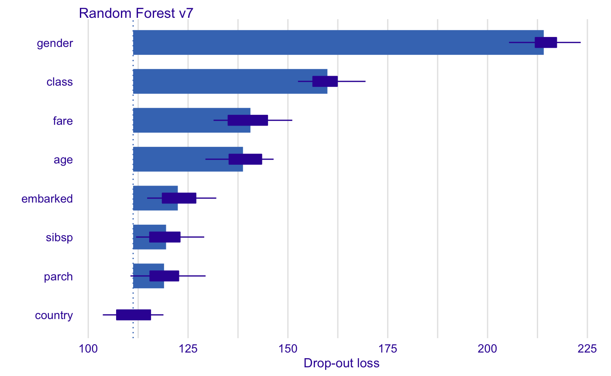
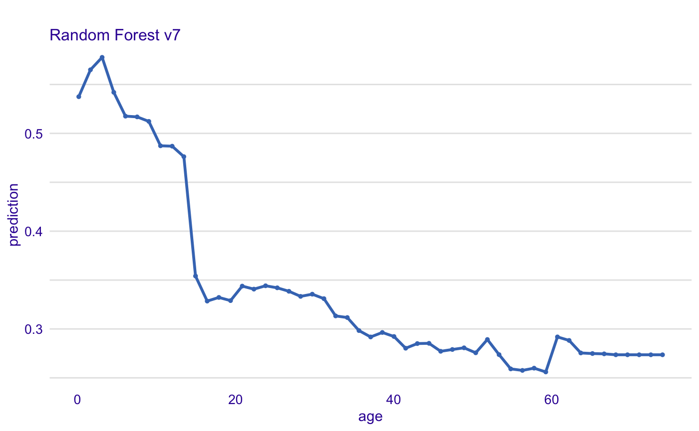
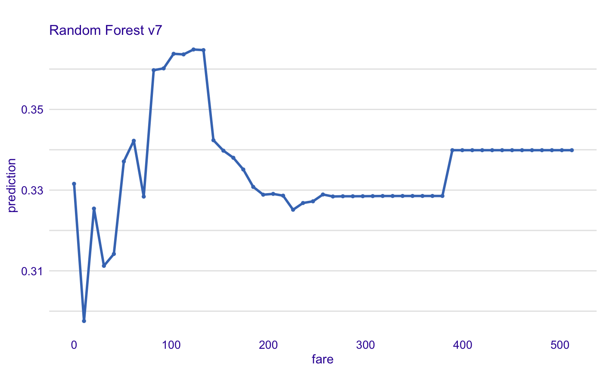
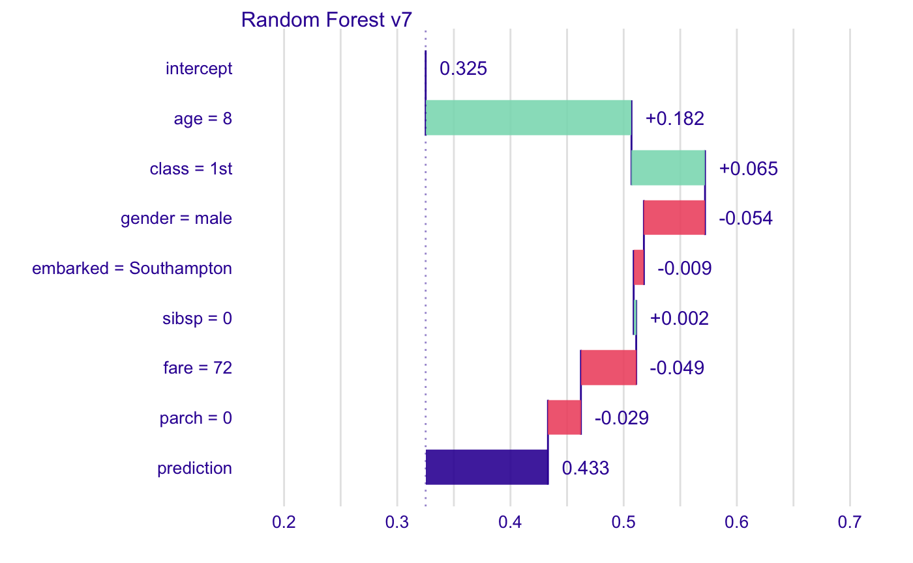
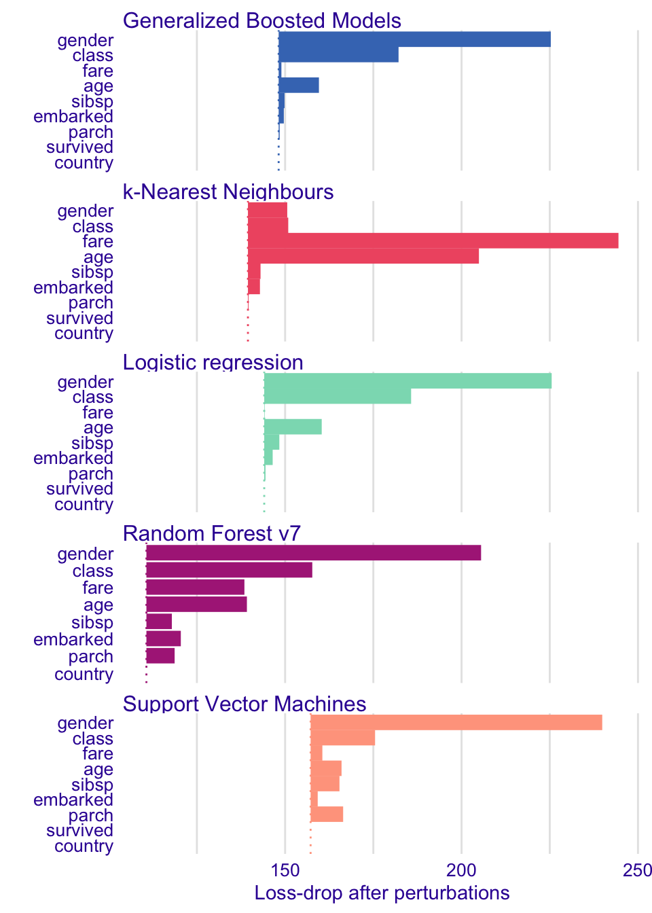
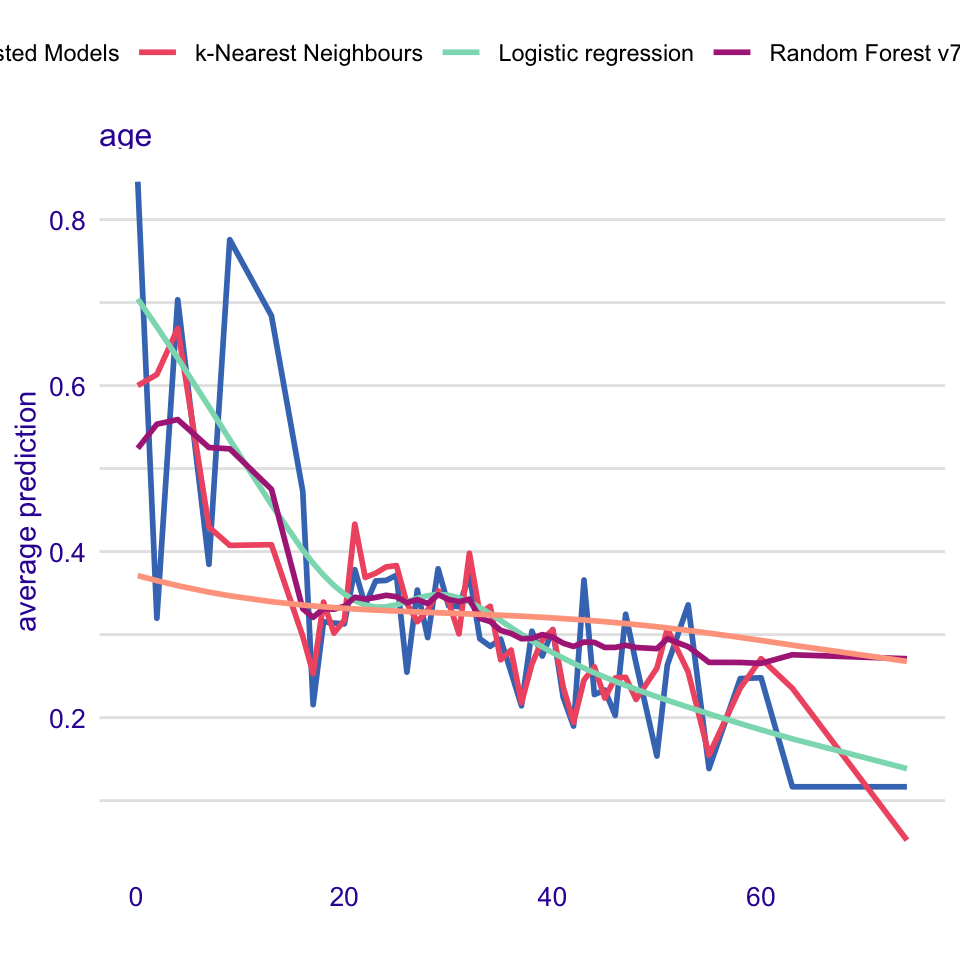
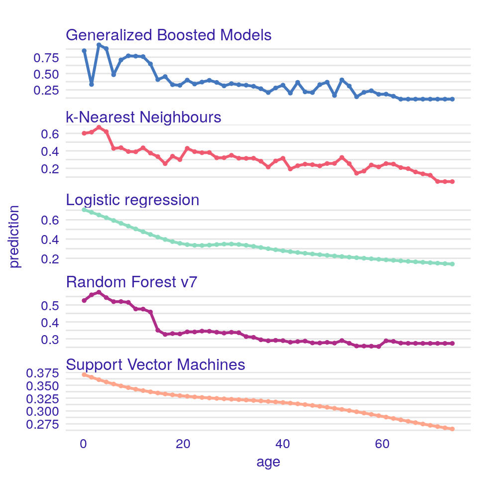
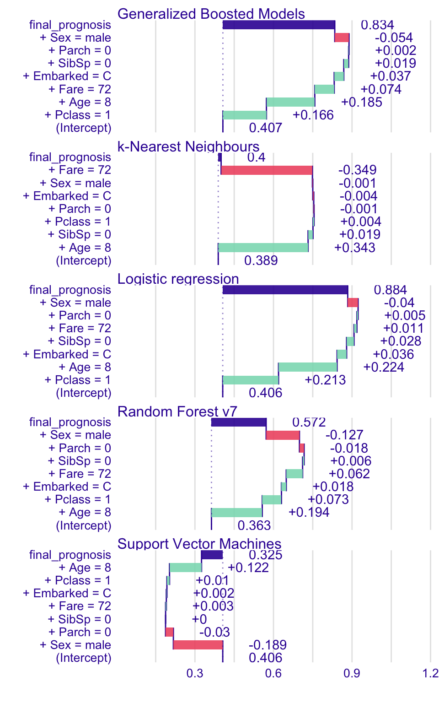

Survival on the RMS Titanic
Przemyslaw Biecek
2019-03-24
vignette_titanic.RmdData for Titanic survival
Let’s see an example for DALEX package for classification models for the survival problem for Titanic dataset. Here we are using a dataset titanic avaliable in teh DALEX package. Note that this data was copied from the stablelearner package.
#> gender age class embarked country fare sibsp parch survived
#> 1 male 42 3rd Southampton United States 7.11 0 0 no
#> 2 male 13 3rd Southampton United States 20.05 0 2 no
#> 3 male 16 3rd Southampton United States 20.05 1 1 no
#> 4 female 39 3rd Southampton England 20.05 1 1 yes
#> 5 female 16 3rd Southampton Norway 7.13 0 0 yes
#> 6 male 25 3rd Southampton United States 7.13 0 0 yesModel for Titanic survival
Ok, not it’s time to create a model. Let’s use the Random Forest model.
# prepare model
library("randomForest")
titanic <- na.omit(titanic)
model_titanic_rf <- randomForest(survived == "yes" ~ gender + age + class + embarked +
fare + sibsp + parch, data = titanic)
model_titanic_rf#>
#> Call:
#> randomForest(formula = survived == "yes" ~ gender + age + class + embarked + fare + sibsp + parch, data = titanic)
#> Type of random forest: regression
#> Number of trees: 500
#> No. of variables tried at each split: 2
#>
#> Mean of squared residuals: 0.1426801
#> % Var explained: 34.9Explainer for Titanic survival
The third step (it’s optional but useful) is to create a DALEX explainer for random forest model.
Variable importance plots
Use the variable_importance() explainer to present importance of particular features. Note that type = "difference" normalizes dropouts, and now they all start in 0.
#> variable dropout_loss label
#> 1 _full_model_ 114.1746 Random Forest v7
#> 2 country 114.1746 Random Forest v7
#> 3 parch 123.6342 Random Forest v7
#> 4 sibsp 125.0427 Random Forest v7
#> 5 embarked 126.0048 Random Forest v7
#> 6 fare 144.9573 Random Forest v7
Variable effects
As we see the most important feature is Sex. Next three importnat features are Pclass, Age and Fare. Let’s see the link between model response and these features.
Such univariate relation can be calculated with variable_response().
Age
Kids 5 years old and younger have much higher survival probability.
#> x y var type label
#> 1 0.1666667 0.526247.... age pdp Random Forest v7
#> 2 1.6433333 0.560144.... age pdp Random Forest v7
#> 3 3.1200000 0.575253.... age pdp Random Forest v7
#> 4 4.5966667 0.554517.... age pdp Random Forest v7
#> 5 6.0733333 0.540128.... age pdp Random Forest v7
#> 6 7.5500000 0.540106.... age pdp Random Forest v7
Fare
Very cheap tickets are linked with lower chances.
vr_fare <- variable_response(explain_titanic_rf, variable = "fare")
plot(vr_fare, use_facets = TRUE)
Instance level explanations
Let’s see break down explanation for model predictions for 8 years old male from 1st class that embarked from port C.
new_passanger <- data.frame(
class = factor("1st", levels = c("1st", "2nd", "3rd", "deck crew", "engineering crew", "restaurant staff", "victualling crew")),
gender = factor("male", levels = c("female", "male")),
age = 8,
sibsp = 0,
parch = 0,
fare = 72,
embarked = factor("Southampton", levels = c("Belfast", "Cherbourg", "Queenstown", "Southampton"))
)
sp_rf <- single_prediction(explain_titanic_rf, new_passanger)
plot(sp_rf)
It looks like the most important feature for this passenger is age and sex. After all his odds for survival are higher than for the average passenger. Mainly because of the young age and despite of being a male.
More models
Let’s train more models for survival.
Logistic regression
library("rms")
model_titanic_lmr <- lrm(survived == "yes" ~ class + gender + rcs(age) + sibsp +
parch + fare + embarked, titanic)
explain_titanic_lmr <- explain(model_titanic_lmr, data = titanic,
y = titanic$survived == "yes",
predict_function = function(m,x) predict(m, x, type="fitted"),
label = "Logistic regression")Generalized Boosted Models (GBM)
library("gbm")
model_titanic_gbm <- gbm(survived == "yes" ~ class + gender + age + sibsp +
parch + fare + embarked, data = titanic, n.trees = 15000)#> Distribution not specified, assuming bernoulli ...Support Vector Machines (SVM)
library("e1071")
model_titanic_svm <- svm(survived == "yes" ~ class + gender + age + sibsp +
parch + fare + embarked, data = titanic,
type = "C-classification", probability = TRUE)
explain_titanic_svm <- explain(model_titanic_svm, data = titanic,
y = titanic$survived == "yes",
label = "Support Vector Machines")k-Nearest Neighbours (kNN)
library("caret")
model_titanic_knn <- knn3(survived == "yes" ~ class + gender + age + sibsp +
parch + fare + embarked, data = titanic, k = 5)
explain_titanic_knn <- explain(model_titanic_knn, data = titanic,
y = titanic$survived == "yes",
predict_function = function(m,x) predict(m, x)[,2],
label = "k-Nearest Neighbours")Variable performance
vi_rf <- variable_importance(explain_titanic_rf)
vi_lmr <- variable_importance(explain_titanic_lmr)
vi_gbm <- variable_importance(explain_titanic_gbm)
vi_svm <- variable_importance(explain_titanic_svm)
vi_knn <- variable_importance(explain_titanic_knn)
plot(vi_rf, vi_lmr, vi_gbm, vi_svm, vi_knn, bar_width = 4)
Single variable
vr_age_rf <- variable_response(explain_titanic_rf, variable = "age")
vr_age_lmr <- variable_response(explain_titanic_lmr, variable = "age")
vr_age_gbm <- variable_response(explain_titanic_gbm, variable = "age")
vr_age_svm <- variable_response(explain_titanic_svm, variable = "age")
vr_age_knn <- variable_response(explain_titanic_knn, variable = "age")
plot(vr_age_rf, vr_age_lmr, vr_age_gbm, vr_age_svm, vr_age_knn)

Instance level explanations
sp_rf <- single_prediction(explain_titanic_rf, new_passanger)
sp_lmr <- single_prediction(explain_titanic_lmr, new_passanger)
sp_gbm <- single_prediction(explain_titanic_gbm, new_passanger)
sp_svm <- single_prediction(explain_titanic_svm, new_passanger)
sp_knn <- single_prediction(explain_titanic_knn, new_passanger)
plot(sp_rf, sp_lmr, sp_gbm, sp_svm, sp_knn)
Session info
#> R version 3.5.0 (2018-04-23)
#> Platform: x86_64-apple-darwin15.6.0 (64-bit)
#> Running under: macOS 10.14.2
#>
#> Matrix products: default
#> BLAS: /Library/Frameworks/R.framework/Versions/3.5/Resources/lib/libRblas.0.dylib
#> LAPACK: /Library/Frameworks/R.framework/Versions/3.5/Resources/lib/libRlapack.dylib
#>
#> locale:
#> [1] en_US.UTF-8/en_US.UTF-8/en_US.UTF-8/C/en_US.UTF-8/en_US.UTF-8
#>
#> attached base packages:
#> [1] parallel splines stats graphics grDevices utils datasets
#> [8] methods base
#>
#> other attached packages:
#> [1] caret_6.0-80 e1071_1.7-1 gbm_2.1.3
#> [4] rms_5.1-2 SparseM_1.77 Hmisc_4.1-1
#> [7] ggplot2_3.1.0 Formula_1.2-3 survival_2.41-3
#> [10] lattice_0.20-35 randomForest_4.6-14 DALEX_0.3.0
#>
#> loaded via a namespace (and not attached):
#> [1] backports_1.1.3 plyr_1.8.4 lazyeval_0.2.2
#> [4] sp_1.3-1 AlgDesign_1.1-7.3 TH.data_1.0-8
#> [7] digest_0.6.18 foreach_1.4.4 htmltools_0.3.6
#> [10] gdata_2.18.0 magrittr_1.5 checkmate_1.8.5
#> [13] memoise_1.1.0 cluster_2.0.7-1 sfsmisc_1.1-2
#> [16] recipes_0.1.3 gower_0.1.2 dimRed_0.1.0
#> [19] gmodels_2.18.1 sandwich_2.4-0 pkgdown_1.0.0
#> [22] colorspace_1.4-1 xfun_0.5 dplyr_0.8.0.1
#> [25] crayon_1.3.4 roxygen2_6.1.1 zoo_1.8-4
#> [28] iterators_1.0.9 glue_1.3.1 DRR_0.0.3
#> [31] gtable_0.2.0 ipred_0.9-6 MatrixModels_0.4-1
#> [34] questionr_0.7.0 kernlab_0.9-27 ddalpha_1.3.3
#> [37] DEoptimR_1.0-8 abind_1.4-5 scales_1.0.0
#> [40] mvtnorm_1.0-10 DBI_1.0.0 miniUI_0.1.1.1
#> [43] Rcpp_1.0.1 xtable_1.8-3 spData_0.3.0
#> [46] htmlTable_1.12 magic_1.5-8 units_0.6-2
#> [49] foreign_0.8-70 spdep_1.0-2 proxy_0.4-23
#> [52] stats4_3.5.0 lava_1.6.2 prodlim_2018.04.18
#> [55] htmlwidgets_1.3 RColorBrewer_1.1-2 acepack_1.4.1
#> [58] pkgconfig_2.0.2 nnet_7.3-12 deldir_0.1-16
#> [61] tidyselect_0.2.5 labeling_0.3 rlang_0.3.1
#> [64] reshape2_1.4.3 later_0.8.0 munsell_0.5.0
#> [67] tools_3.5.0 pls_2.6-0 factorMerger_0.3.6
#> [70] broom_0.5.0 evaluate_0.13 geometry_0.3-6
#> [73] stringr_1.4.0 yaml_2.2.0 ModelMetrics_1.1.0
#> [76] knitr_1.22 fs_1.2.6 robustbase_0.93-3
#> [79] pdp_0.7.0 purrr_0.3.2 nlme_3.1-137
#> [82] mime_0.6 quantreg_5.38 RcppRoll_0.2.2
#> [85] xml2_1.2.0 compiler_3.5.0 rstudioapi_0.10
#> [88] klaR_0.6-14 tibble_2.1.1 stringi_1.4.3
#> [91] highr_0.7 desc_1.2.0 Matrix_1.2-14
#> [94] classInt_0.3-1 commonmark_1.5 pillar_1.3.1
#> [97] LearnBayes_2.15.1 combinat_0.0-8 data.table_1.12.0
#> [100] cowplot_0.9.4 httpuv_1.5.0 agricolae_1.3-0
#> [103] R6_2.4.0 latticeExtra_0.6-28 promises_1.0.1
#> [106] gridExtra_2.3 codetools_0.2-15 polspline_1.1.13
#> [109] boot_1.3-20 MASS_7.3-49 gtools_3.8.1
#> [112] assertthat_0.2.1 CVST_0.2-2 rprojroot_1.3-2
#> [115] withr_2.1.2 multcomp_1.4-8 expm_0.999-3
#> [118] grid_3.5.0 rpart_4.1-13 timeDate_3043.102
#> [121] tidyr_0.8.3 coda_0.19-2 class_7.3-14
#> [124] rmarkdown_1.12 breakDown_0.2.0 ggpubr_0.2
#> [127] sf_0.7-3 lubridate_1.7.4 shiny_1.2.0
#> [130] base64enc_0.1-3